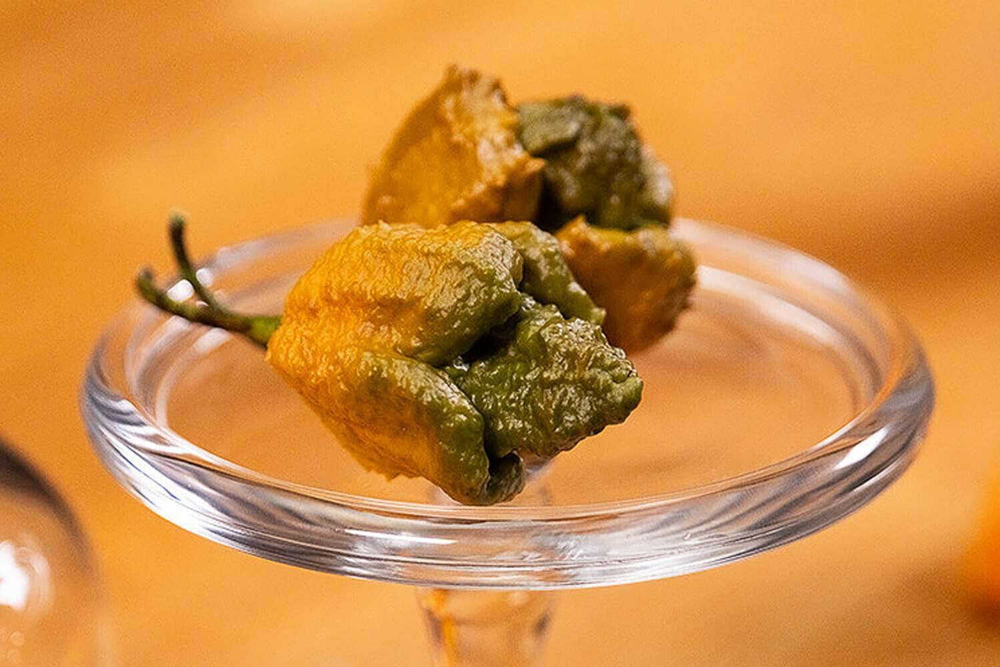
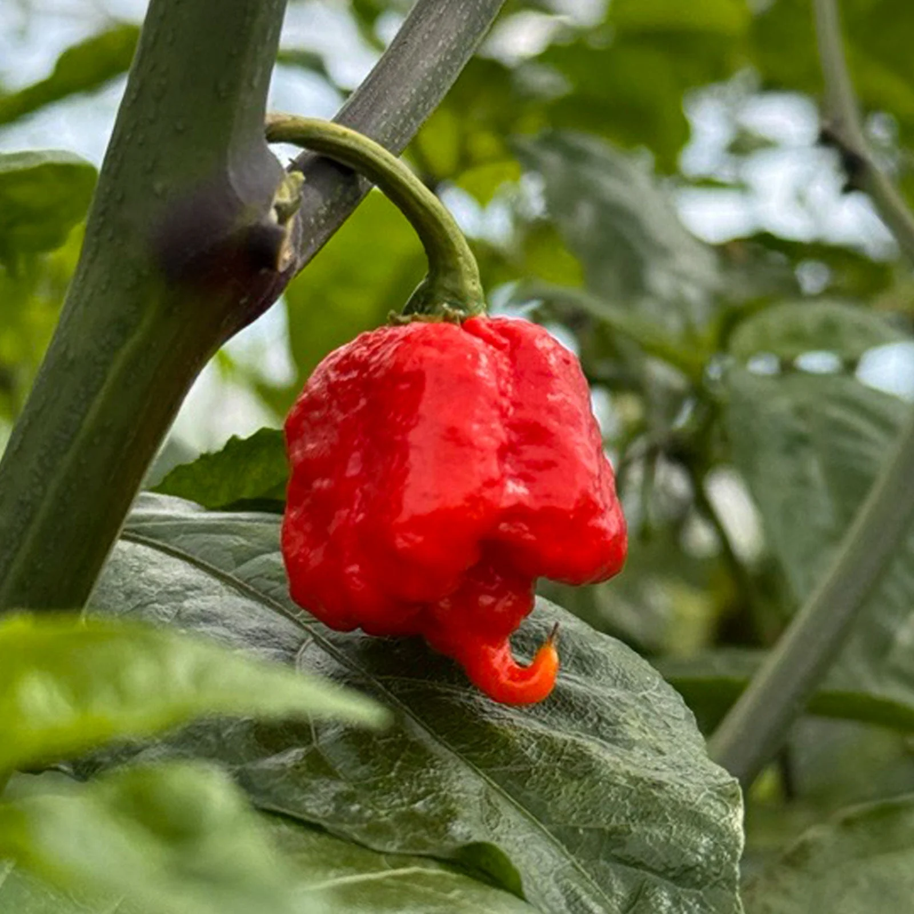
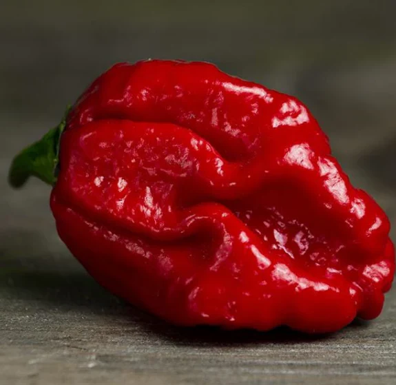

Pepper más picante - 3,180,000
 Dragon Breath's - 2,500,000
Dragon Breath's - 2,500,000 Carolina Reaper - 2,300,000
Trinidad Scrorpion - 2,000,000
 Ghost Pepper - 1,041,427
Ghost Pepper - 1,041,427El ser humano tambien tiene predileccion por el dolor cuando ingiere alimentos, se podria decir que es como si practicara sadomasoquismo gastronomico. Solo asi se explica que algunas culturas prueben picantes capaces de hacerte llorar por el escozor. Para medir hasta que punto un alimento es picante, el quimico estadounidense Wilbur Scoville concibio la biblia de los amantes del chile en 1912, las unidades de picor de Scoville. Para resultar lo mas objetivo posible en la medicion, scoville creo una serie de disoluciones muy altas de la capsaicina, la sustancia responsable de que los pimientos piquen. A continuacion dio a probar las disoluciones a cinco individuos. La disolucion con la que los desgustadores detectaban picor sirvio para construir la escala de Scoville.
Dragon Breath's - 2,500,000 Ghost Pepper - 1,041,427Dragon Breath's - 2,500,000 Ghost Pepper - 1,041,427